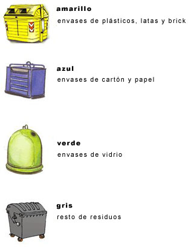

Reciclaje
Consejos sobre el reciclaje

- Úsalos. Colabora y separa tu basura
- Contenedor azul
Se reciclan papel y cartón. - Contenedor verde
Se reutiliza y se recicla vidrio. - Contenedor amarillo
Se reciclan envases de plástico, metal, brick… - Contenedor normal
Se reciclan el resto de residuos.
- Hay que reciclar para regenerar, ya que los recursos naturales de nuestro planeta son limitados: REDUCIR, REUTILIZAR y RECICLAR, son tres objetivos que hay que cumplir. Pero estos objetivos sólo son posibles con la colaboración activa de todos.
- No todos los residuos son iguales, en las calles principales de cada pueblo existen diferentes contenedores en los que se pueden depositar los residuos previamente seleccionados.
- Si necesita deshacerse de muebles, electrodomésticos o trastos viejos, consulte con su Ayuntamiento, no los deje en cualquier sitio, ya que existen los llamados contenedores de voluminosos para este tipo de objetos.
- Deposite la basura en bolsas cerradas, y dentro del contenedor, no alrededor.
- No echo escorias, escombros, líquidos…
- Cuando cambie el aceite de su automóvil, llévelo a un taller autorizado
- Deposite las basuras después de las ocho de la tarde.
- La emisión de gases y las empresas contaminantes provocan que el agujero en la capa de ozono sea cada vez más grande y está generando un cambio climático que nos afecta a todos.
- Los recursos naturales se agotan, el agua se convierte así en un bien preciado. Cada actuación tuya en tu vida cotidiana, por pequeña que sea, es fundamental para ahorrar agua. Utiliza el agua racionalmente
- Dúchate en lugar de bañarte, puedes ahorrar hasta 100 litros de agua.
- No dejes correr el grifo innecesariamente, ahorraras hasta 15 litros.
- Revisa las averías y fugas de los sanitarios, 10 gotas de agua por minuto equivalen a 2.000 litros de agua desperdiciada al año.
- Reduce el consumo de los grifos colocando dispositivos de ahorro.
- Utiliza los electrodomésticos sólo cuando estén llenos
- Si tienes jardín, usa un método de riego que no derroche agua.
- Ten muy presente que derrochar es una estupidez, adopta una postura inteligente, ahorra energía.